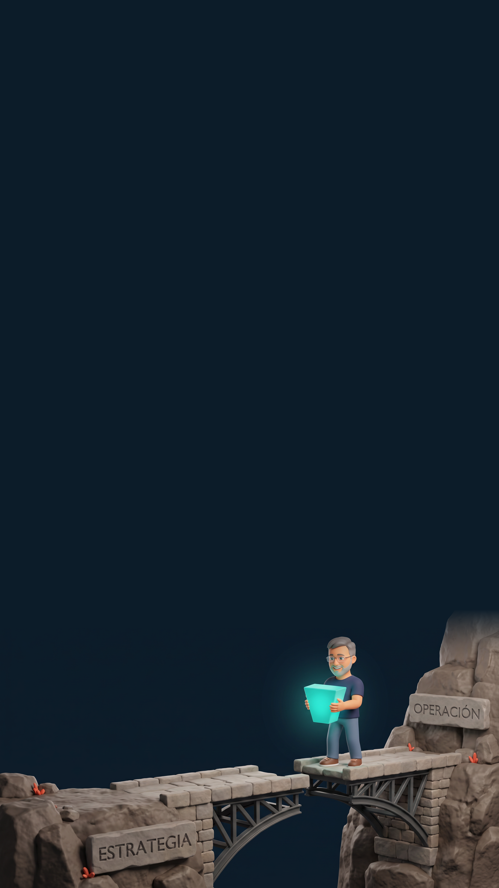
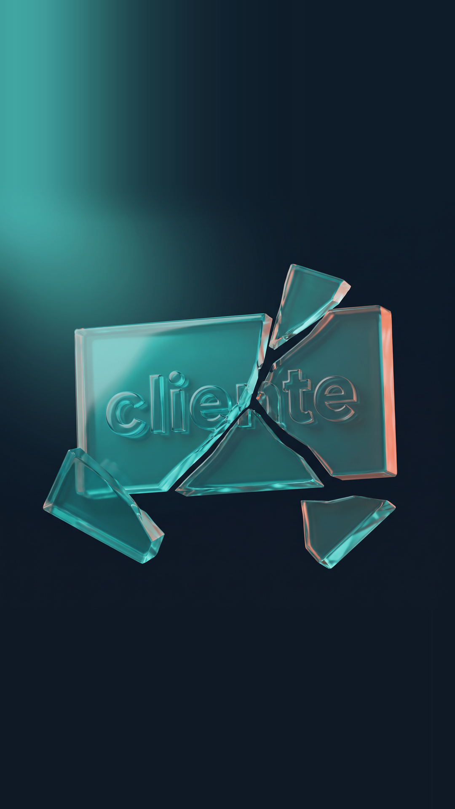
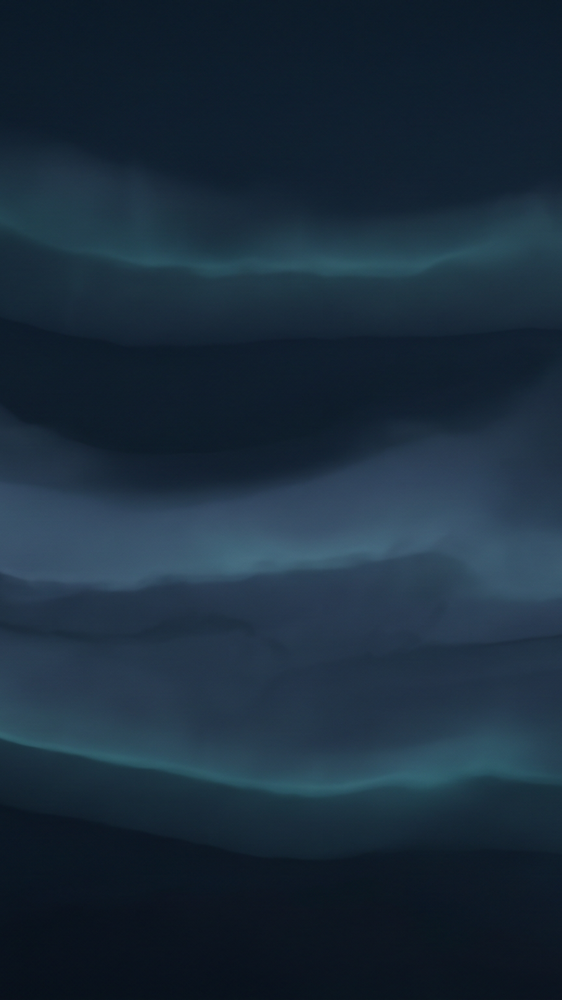
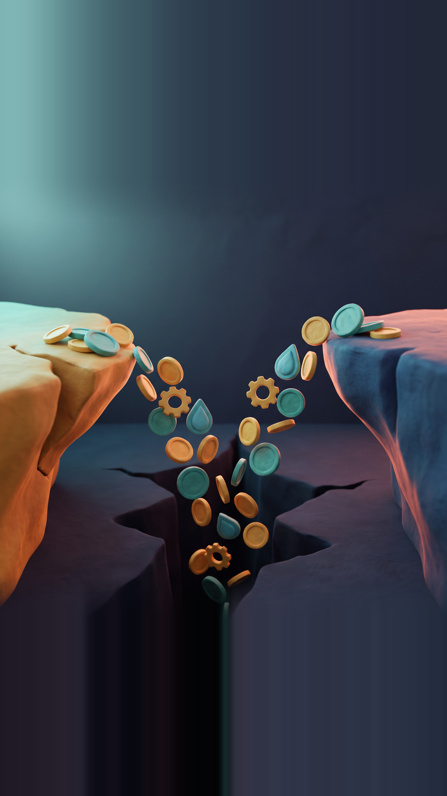
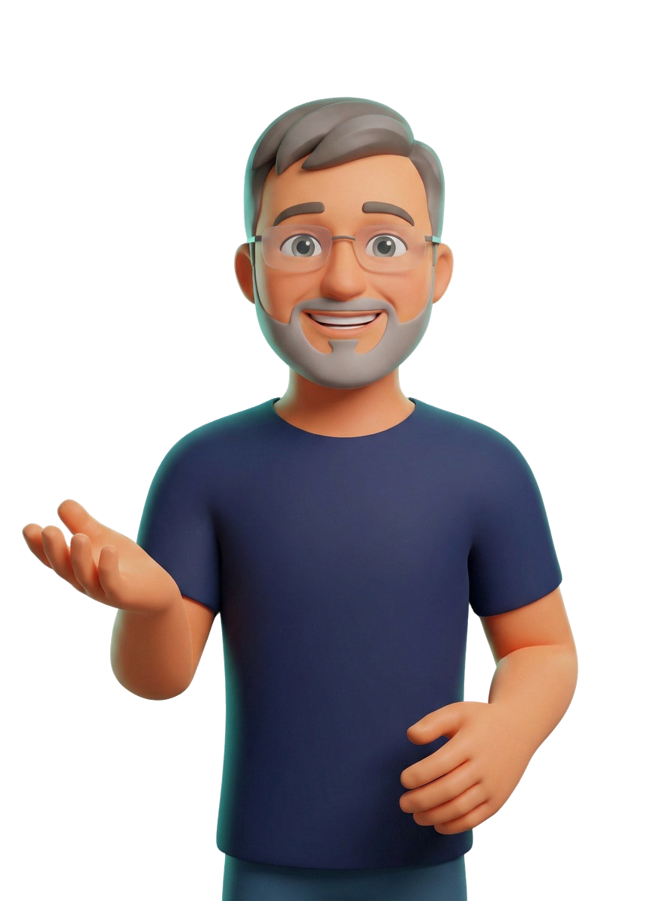
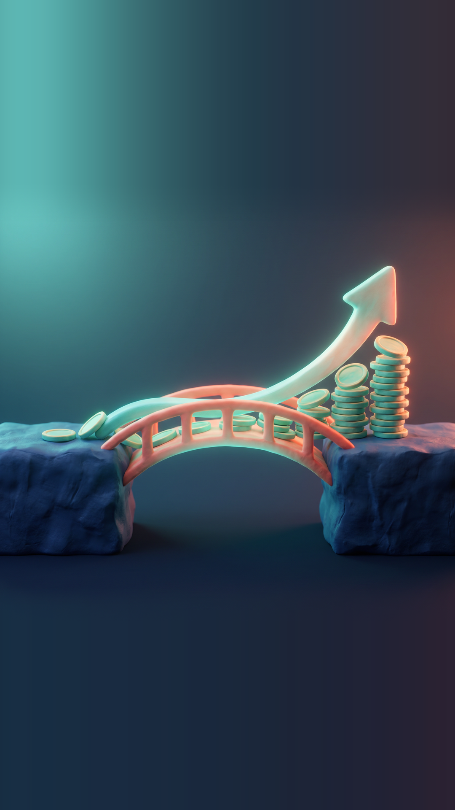

🌉 ESTRATEGIA ↔ OPERACIÓN
El puente que le falta
a tu estrategia.
a tu estrategia.
Tus datos recuerdan, pero no actúan.

La misma frase, dos idiomas distintos.
🪨 LA GRIETA · DOS MUNDOS QUE NO SE HABLAN
LA GRIETA
EL MODELO
EL PUENTE

Estrategia lo dice. Operación no sabe qué tocar.
«Subir margen en premium.»
¿Qué SKU? ¿Qué turno?
¿Con qué presupuesto?
¿Con qué presupuesto?

«cliente»
🔤 LA GRIETA · UNA PALABRA, CINCO VERDADES
LA GRIETA
EL MODELO
EL PUENTE

Cinco equipos, cinco clientes distintos.
📊 ventas
quien firma el contrato
📊 soporte
quien abre el ticket
📊 finanzas
quien paga la factura
📊 datos
una fila con un id
📊 dirección
un segmento del plan
El Say-Do Gap
La promesa estratégica nunca es mayor que lo que la operación puede sostener.
📉 LA GRIETA · EL PRINCIPIO
LA GRIETA
EL MODELO
EL PUENTE
lo que dices ≤ lo que sostienes

Cinco systems of record. Ninguno comparte el modelo.
🗂️ LA GRIETA · CADA EQUIPO, SU PROPIO MAPA
LA GRIETA
EL MODELO
EL PUENTE

El dato solo recuerda. Nadie comparte el modelo.
ERP
CRM
BI
Hoja de cálculo
Data lake

2 de 3
iniciativas estratégicas nunca tocan la operación.
🩸 LA GRIETA · EL COSTE
LA GRIETA
EL MODELO
EL PUENTE
Ese es el tamaño de la grieta.

SYSTEM OF RECORDERP · CRM · BI — solo recuerda
ONTOLOGÍAel modelo compartido: promociona registro → acción
SYSTEM OF ACTIONdecisiones · ejecución en el mundo real
señalREGISTRO
palancaACCIÓN
La ontología es el puente, no otra base de datos
🌉 EL MODELO · LA CAPA QUE FALTABA
LA GRIETA
EL MODELO
EL PUENTE

El dato solo recuerda. La ontología lo convierte en palanca.
hace
incluye
genera
abre
atiende
procesa
reglas
un pedido ⇒ ≥ 1 SKU
margen = precio − coste
👤cliente
🧾pedido
📦SKU
📈margen
⏰turno
🎫ticket
La ontología es un grafo, no una tabla
🕸️ EL MODELO · ENTIDADES Y RELACIONES
LA GRIETA
EL MODELO
EL PUENTE

Un mismo pedido lo entienden ventas, almacén y soporte.
hace
incluye
genera
abre
atiende
procesa
👤cliente
🧾pedido
📦SKU
📈margen
⏰turno
🎫ticket
Cinco mapas sueltos, un solo modelo
🎯 EL MODELO · CINCO MAPAS → UNO
LA GRIETA
EL MODELO
EL PUENTE
El mismo «cliente» ya significa una cosa.
ERP
CRM
BI
Hoja
Data lake
La ontología convierte tu system of record en system of action.
El dato deja de recordar y empieza a decidir: la misma verdad, ahora accionable.
🔑 EL MODELO · LA TESIS
LA GRIETA
EL MODELO
EL PUENTE

Margen premium ↑
Precio
P1Lista premium
la lista
Mix
M1% SKU premium
la mezcla
Coste unitario
C1Coste / turno
el suelo
modeladoparcialpor modelar
⬇️ EL PUENTE · LA PALANCA BAJA COMO ACCIÓN
LA GRIETA
EL MODELO
EL PUENTE

Baja a botones.
Margen premium ↑
Precio
P1Lista premium
la lista
Mix
M1% SKU premium
la mezcla
Coste unitario
C1Coste / turno
el suelo
modeladoparcialpor modelar
⬆️ EL PUENTE · LA SEÑAL SUBE COMO REGISTRO
LA GRIETA
EL MODELO
EL PUENTE
Sube como registro medido.
🧭
Planear
en los mismos términos
⚙️
Ejecutar
el system of action
📏
Medir
la señal vuelve
🎛️
Afinar
el modelo aprende
record ⇄ action
El bucle cierra
🔄 EL PUENTE · RECORD ⇄ ACTION
LA GRIETA
EL MODELO
EL PUENTE

Todo en los mismos términos.
1
EL PUENTE · CASO TRABAJADO«Subir margen premium» → ¿qué cambió el martes en la planta?
La decisión TRAZA hasta el precio del SKU-7 y vuelve como margen medido — sin traducción perdida.
Una decisión. Un camino. Ida y vuelta.
LA GRIETA
EL MODELO
EL PUENTE

INICIATIVAS QUE ATERRIZAN
33% → 80%
🚀 EL PUENTE · EL STAKE, REENCUADRADO
LA GRIETA
EL MODELO
EL PUENTE
El mismo esfuerzo, el doble aterriza.
Governance Lock
El puente necesita un dueño: la ontología es un modelo VIVO con un steward y una fecha.
🔒 EL PUENTE · GOBIERNO
LA GRIETA
EL MODELO
EL PUENTE
Cómo empezar el lunes
Nombra las entidades · el vocabulario compartido
Acuerda las relaciones · cómo se conectan de verdad
Instrumenta las métricas · qué mide cada una
Asigna el steward · un dueño, una fecha
🧰 CIERRE · CHEAT-SHEET
LA GRIETA
EL MODELO
EL PUENTE
Empieza por nombrar.
La curva de ALINEACIÓN
Alineado
A medias
Roto
😖
La grieta
2/10 — el dato no actúa
😐
El modelo
6/10 — una sola verdad
😍
El puente
9/10 — el bucle cierra
📈 CIERRE · EL RECAP
LA GRIETA
EL MODELO
EL PUENTE
La pendiente es el argumento.
¿Dónde está TU grieta?
Estrategia ↔ operación
Equipo ↔ equipo
Dato ↔ decisión
🗳️ CIERRE · TU TURNO
LA GRIETA
EL MODELO
EL PUENTE

¿Cuál te suena más?
El puente está. ¿Lo construimos?
Case Study #102
La estrategia ya puede bajar al suelo — y volver como registro medido.
Empieza por nombrar tus entidades →
Nos vemos en el suelo.